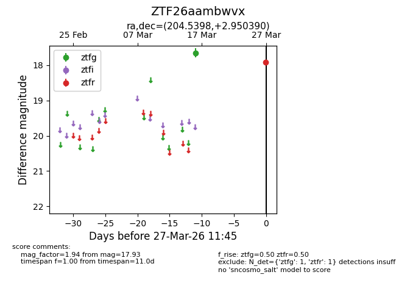
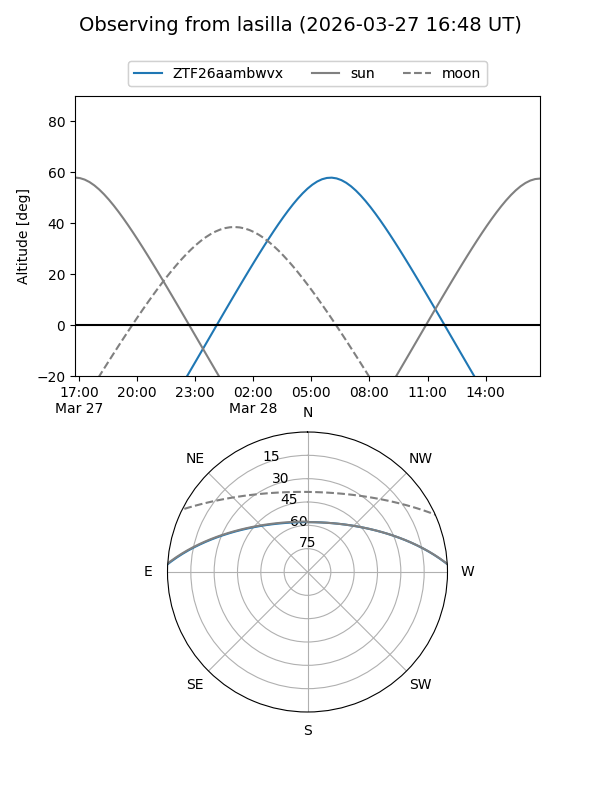
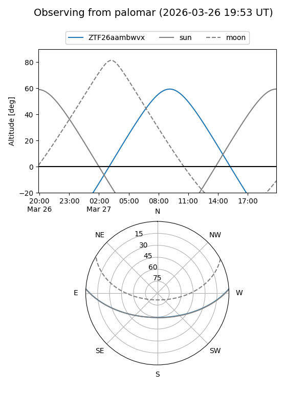

ZTF26aambwvx
Target ZTF26aambwvx at 2026-03-27 11:48
Aliases and brokers:
FINK: link
Lasair: link
ALeRCE: link
alt names
ZTF26aambwvx (ztf,fink_ztf)
Coordinates:
equatorial (ra, dec) = 204.5398,+2.95039
equatorial (HMS+DMS) = 13:38:09.56,+02:57:01.40
galactic (l, b) = (329.7385,+63.36407)
Flags:
Photometry:
last ztfg=17.65, ztfr=17.93
1 ztfg, 1 ztfr detections
Lightcurve

Visibility


Additional plots